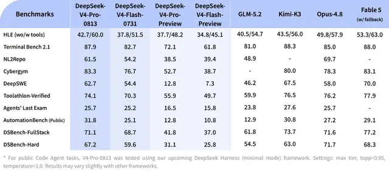

#deep-seek
DeepSeek-V4-Pro正式投入、Agent強化と「推論量の可変制御」を実装

DeepSeekは「DeepSeek-V4-Pro」の正式提供を開始しました。今回の更新ではAgent性能を重点的に強化し、タスクに応じて推論量をlow・high・maxへ切り替える仕組みを導入。さらにOpenAI Responses APIをネイティブサポートし、Codexを意識した開発環境との接続性も高めています。
記事で取り上げている点
- Agentを「常時最大推論」から解放
- OpenAI Responses API互換が持つ意味
- API料金はピーク・オフピーク制へ
- 結論
一次情報（出典） twitter.com